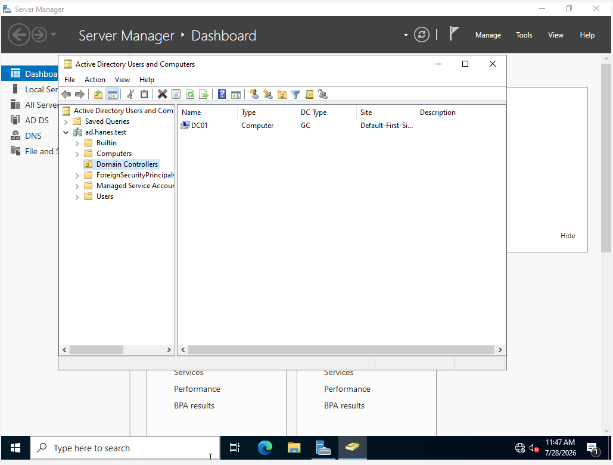
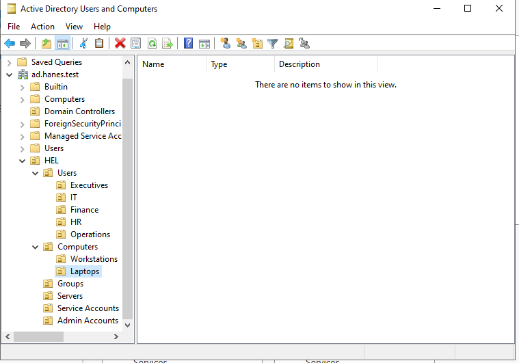
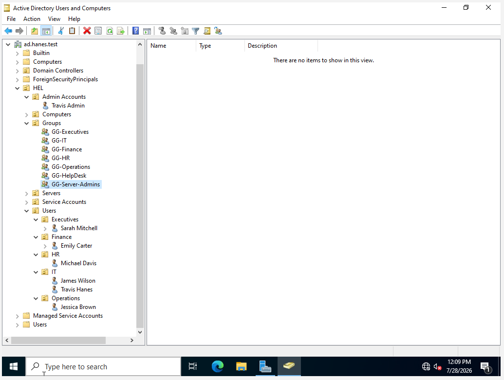
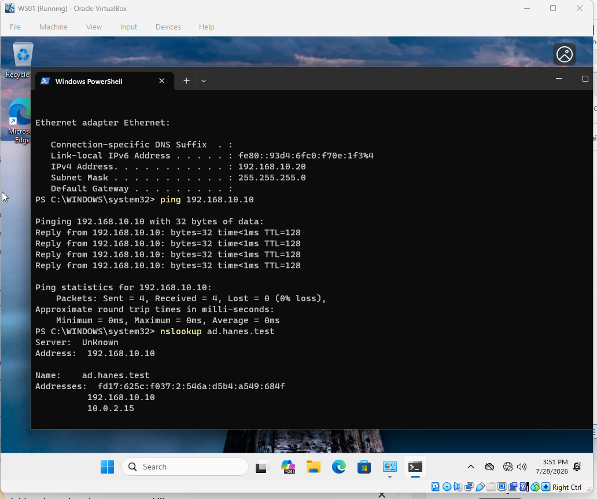
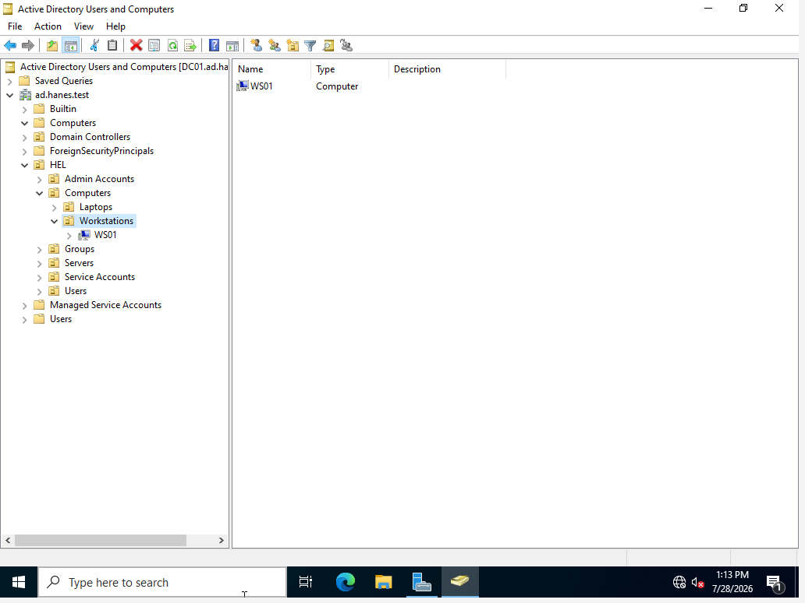
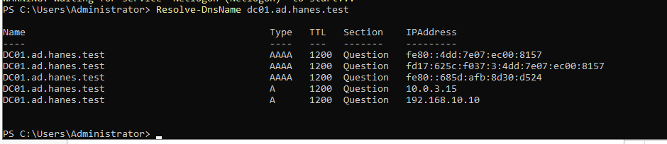

ENTERPRISE SECURITY • WINDOWS INFRASTRUCTURE
Enterprise Security Infrastructure
Built and secured a Windows enterprise environment using Windows Server, Active Directory, DNS, Group Policy, identity management, domain-joined endpoints, and centralized security configuration.

01 — OVERVIEW
Project Overview
This project documents the design, deployment, and security hardening of a Windows enterprise environment built around the ad.hanes.test Active Directory domain.
The environment provides centralized identity management, domain authentication, name resolution, role-based access, security policy enforcement, and workstation administration through Windows Server and Group Policy.
The finished infrastructure established a stable foundation for later blue-team monitoring and detection work while remaining focused on the core enterprise services required to manage Windows systems securely.
02 — ENVIRONMENT
Lab Architecture
DOMAIN CONTROLLER
DC01
Windows Server 2022 providing AD DS, DNS, authentication, Group Policy, and centralized administration.
DOMAIN CLIENT
WS01
Windows 11 workstation used to validate domain membership, authentication, policy deployment, and hardening.
VIRTUALIZATION
VirtualBox
Isolated virtualization platform used to deploy and manage the server and workstation systems.
03 — METHODOLOGY
Deployment Process
Virtual Machine Deployment
Deployed Windows Server 2022 and Windows 11 virtual machines in VirtualBox.
Network & DNS Configuration
Configured IP addressing, internal DNS, and communication between DC01 and WS01.
Active Directory Deployment
Installed AD DS and promoted DC01 as the domain controller for ad.hanes.test.
Identity & Access Design
Created OUs, users, administrative accounts, computers, and role-based groups.
Domain Integration
Joined WS01 to the domain and validated OU placement and secure-channel health.
Security Baseline Deployment
Applied a workstation security baseline through Group Policy.
04 — EVIDENCE
Technical Walkthrough
STEP 01
Domain Controller Deployment
I deployed Windows Server 2022 and installed the core services required for the domain environment.
Active Directory Domain Services, DNS Server, Group Policy Management, and supporting administrative tools were installed before the server was promoted to the primary domain controller.
The completed deployment established DC01 as the domain controller for ad.hanes.test.
Core Services
Windows Server 2022
Active Directory Domain Services
DNS Server
Group Policy Management
Domain: ad.hanes.test
Domain Controller: DC01
Active Directory Domain Services and DNS were installed as the core identity and name-resolution services.
DC01 was successfully promoted as the domain controller for ad.hanes.test.
STEP 02
Active Directory Organizational Structure
I designed an OU structure to separate users, computers, administrative accounts, groups, servers, and service accounts.
Department-specific OUs were created for Executives, Finance, Human Resources, IT, and Operations. Computer objects were separated into Workstations and Laptops.
This structure created a scalable foundation for role-based access, policy targeting, and delegated administration.
Domain Structure
ad.hanes.test
└── HEL
├── Admin Accounts
├── Computers
│ ├── Laptops
│ └── Workstations
├── Groups
├── Servers
├── Service Accounts
└── Users
├── Executives
├── Finance
├── HR
├── IT
└── Operations
Organizational Units separated users, systems, groups, and administrative functions.

Department user accounts were organized within the corresponding OUs.
STEP 03
Users, Security Groups & Role-Based Access
Departmental security groups were created to support centralized and scalable access management.
Groups were created for Executives, IT, Finance, Human Resources, Operations, Help Desk, and Server Administrators.
Membership was validated by assigning IT user accounts to GG-IT.
Security Groups
GG-Executives
GG-IT
GG-Finance
GG-HR
GG-Operations
GG-HelpDesk
GG-ServerAdmins
Departmental and administrative security groups supported role-based access management.

IT user accounts were assigned to GG-IT to validate group-based administration.
STEP 04
Windows 11 Domain Integration
I integrated the Windows 11 workstation WS01 into the ad.hanes.test domain.
Before the domain join, I validated connectivity to DC01 and confirmed DNS resolution through the internal domain controller.
After joining WS01, I moved the computer object into the Workstations OU and validated the workstation's secure channel.
Domain Integration
Domain: ad.hanes.test
Domain Controller: DC01
DC01: 192.168.10.10
Workstation: WS01
WS01: 192.168.10.20
Computer OU: HEL/Computers/Workstations
Logon Server: \\DC01
Secure Channel: True
WS01 successfully resolved and communicated with DC01 before joining the domain.

WS01 was placed in the Workstations OU for targeted policy administration.

Domain authentication and secure-channel health were validated directly from WS01.
STEP 05
Group Policy & Endpoint Security Hardening
I created a centralized Workstation Security Baseline through Group Policy and linked it to the Workstations OU.
The baseline enforced Windows Defender Firewall and Microsoft Defender Antivirus settings across the domain-joined endpoint.
Firewall profiles were enabled with unsolicited inbound connections blocked, while Defender real-time protection was centrally enforced.
I validated the deployment directly from WS01 to confirm that the Workstation Security Baseline and Default Domain Policy were successfully applied.
Security Baseline
Workstation Security Baseline
│
├── Windows Defender Firewall
│ ├── Domain Profile: Enabled
│ ├── Private Profile: Enabled
│ ├── Public Profile: Enabled
│ ├── Inbound Connections: Block
│ └── Outbound Connections: Allow
│
├── Microsoft Defender Antivirus
│ ├── Real-Time Protection: Enabled
│ ├── Behavior Monitoring: Enabled
│ ├── Downloaded File Scanning: Enabled
│ └── File & Program Monitoring: Enabled
│
├── Target OU
│ └── HEL/Computers/Workstations
│
└── Validation
├── Endpoint: WS01
└── GPO Applied Successfully
The Workstation Security Baseline GPO was linked to the Workstations OU.

Windows Defender Firewall was centrally configured with inbound traffic blocked by default.

Microsoft Defender protections were configured and enforced through Group Policy.

Group Policy results on WS01 confirmed successful baseline deployment.
05 — TROUBLESHOOTING
Troubleshooting & Problem Solving
Building the environment required troubleshooting across networking, DNS, domain communication, and policy validation.
ISSUE 01
Active Directory DNS Registration
During domain connectivity testing, I identified DNS registration and name-resolution issues affecting communication with the domain controller.
Because Active Directory relies on DNS to locate domain controllers and authentication services, I reviewed the internal DNS configuration and corrected DC01 registration.
I then used PowerShell to confirm that dc01.ad.hanes.test resolved to the correct internal address.
Problem
Domain services were not resolving consistently through the expected internal DNS configuration.
Action
Reviewed the Active Directory DNS configuration and corrected the DNS registration for DC01.
Validation
Confirmed that dc01.ad.hanes.test resolved to 192.168.10.10 using PowerShell.
Validation
Resolve-DnsName dc01.ad.hanes.test
Name: dc01.ad.hanes.test
Address: 192.168.10.10
DC01 successfully resolved to 192.168.10.10 after the DNS registration was corrected.
06 — SECURITY OUTCOMES
Infrastructure Outcomes
The completed environment provides centralized identity, access control, endpoint administration, and security policy enforcement across a Windows domain.
IDENTITY
Centralized Directory Services
Deployed Active Directory Domain Services for centralized authentication and identity management.
ORGANIZATION
Scalable Domain Structure
Organized users, systems, groups, servers, and administrative accounts through targeted OUs.
ACCESS CONTROL
Role-Based Security Groups
Used departmental security groups to support scalable, group-based permission administration.
ENDPOINT MANAGEMENT
Domain-Joined Workstation
Integrated WS01 and validated DNS, authentication, OU placement, and secure-channel health.
POLICY
Centralized Configuration
Applied security settings through Group Policy rather than configuring each system independently.
HARDENING
Workstation Security Baseline
Enforced Defender Firewall and Antivirus protections through a validated workstation baseline.
07 — SKILLS DEMONSTRATED
Technical Skills Demonstrated
This project required hands-on work across Windows Server, identity management, networking, endpoint administration, policy deployment, and infrastructure troubleshooting.
IDENTITY
Active Directory
Deployed and administered an Active Directory domain with users, groups, OUs, computers, and administrative accounts.
NETWORKING
DNS & Domain Connectivity
Configured and troubleshot internal DNS, IP addressing, domain communication, and secure-channel health.
ACCESS CONTROL
Role-Based Administration
Created departmental security groups and validated membership-based identity administration.
POLICY
Group Policy
Created, linked, applied, and validated Group Policy Objects for domain-joined endpoints.
ENDPOINT SECURITY
Windows Security Hardening
Centrally configured Microsoft Defender Antivirus and Windows Defender Firewall protections.
VALIDATION
PowerShell & Troubleshooting
Used PowerShell and Windows administrative tools to validate DNS, domain trust, policy application, and infrastructure health.
08 — LESSONS LEARNED
Lessons Learned & Project Takeaways
Building the environment reinforced that enterprise Windows infrastructure depends on correctly configured and validated relationships between networking, DNS, identity, policy, and endpoint administration.
01 — DNS
Identity Depends on Name Resolution
Active Directory relies on internal DNS. Name resolution should be validated before troubleshooting higher-level domain services.
02 — STRUCTURE
Design Supports Scalability
A clear OU and group structure makes identity, policy, and future administrative delegation easier to manage.
03 — POLICY
Configuration Requires Validation
Creating a GPO does not guarantee endpoint application. Policy results must be verified directly on the target.
04 — TROUBLESHOOTING
Validate One Dependency at a Time
Testing connectivity, DNS, domain trust, and policy independently reduced unnecessary configuration changes.
FINAL TAKEAWAY
A Secure Foundation for Enterprise Operations
This project established a functioning Windows domain with centralized identity management, role-based administration, policy enforcement, endpoint hardening, and validated domain communication.
The completed infrastructure now serves as the foundation for separate blue-team monitoring, detection engineering, and offensive-security projects.